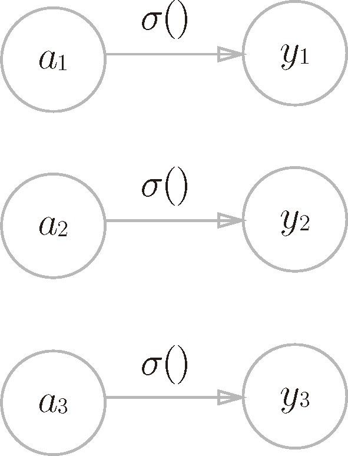
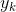

机器学习的问题大致可以分为分类问题和回归问题。分类问题是数据属于哪一个类别的问题。比如，区分图像中的人是男性还是女性的问题就是分类问题。而回归问题是根据某个输入预测一个（连续的）数值的问题。比如，根据一个人的图像预测这个人的体重的问题就是回归问题（类似“57.4kg”这样的预测）。
机器学习的问题大致可以分为分类问题和回归问题。分类问题是数据属于哪一个类别的问题。比如，区分图像中的人是男性还是女性的问题就是分类问题。而回归问题是根据某个输入预测一个（连续的）数值的问题。比如，根据一个人的图像预测这个人的体重的问题就是回归问题（类似“57.4kg”这样的预测）。
神经网络可以用在分类问题和回归问题上，不过需要根据情况改变输出层的激活函数。一般而言，回归问题用恒等函数，分类问题用 softmax 函数。
恒等函数会将输入按原样输出，对于输入的信息，不加以任何改动地直接输出。因此，在输出层使用恒等函数时，输入信号会原封不动地被输出。另外，将恒等函数的处理过程用之前的神经网络图来表示的话，则如图 3-21 所示。和前面介绍的隐藏层的激活函数一样，恒等函数进行的转换处理可以用一根箭头来表示。

图 3-21 恒等函数
分类问题中使用的 softmax 函数可以用下面的式（3.10）表示。
exp(x) 是表示 的指数函数（e 是纳皮尔常数 2.7182 ...）。式（3.10）表示假设输出层共有 n 个神经元，计算第 k 个神经元的输出 。如式（3.10）所示，softmax 函数的分子是输入信号 的指数函数，分母是所有输入信号的指数函数的和。
用图表示 softmax 函数的话，如图 3-22 所示。图 3-22 中，softmax 函数的输出通过箭头与所有的输入信号相连。这是因为，从式（3.10）可以看出，输出层的各个神经元都受到所有输入信号的影响。
图 3-22 softmax 函数
现在我们来实现 softmax 函数。在这个过程中，我们将使用 Python 解释器逐一确认结果。
>>> a = np.array([0.3, 2.9, 4.0]) >>> >>> exp_a = np.exp(a) # 指数函数 >>> print(exp_a) [ 1.34985881 18.17414537 54.59815003] >>> >>> sum_exp_a = np.sum(exp_a) # 指数函数的和 >>> print(sum_exp_a) 74.1221542102 >>> >>> y = exp_a / sum_exp_a >>> print(y) [ 0.01821127 0.24519181 0.73659691]
这个 Python 实现是完全依照式（3.10）进行的，所以不需要特别的解释。考虑到后面还要使用 softmax 函数，这里我们把它定义成如下的 Python 函数。
def softmax(a):
exp_a = np.exp(a)
sum_exp_a = np.sum(exp_a)
y = exp_a / sum_exp_a
return y
上面的 softmax 函数的实现虽然正确描述了式（3.10），但在计算机的运算上有一定的缺陷。这个缺陷就是溢出问题。softmax 函数的实现中要进行指数函数的运算，但是此时指数函数的值很容易变得非常大。比如， 的值会超过 20000， 会变成一个后面有 40 多个 0 的超大值， 的结果会返回一个表示无穷大的 inf。如果在这些超大值之间进行除法运算，结果会出现“不确定”的情况。
计算机处理“数”时，数值必须在 4 字节或 8 字节的有限数据宽度内。这意味着数存在有效位数，也就是说，可以表示的数值范围是有限的。因此，会出现超大值无法表示的问题。这个问题称为溢出，在进行计算机的运算时必须（常常）注意。
softmax 函数的实现可以像式（3.11）这样进行改进。
首先，式（3.11）在分子和分母上都乘上 C 这个任意的常数（因为同时对分母和分子乘以相同的常数，所以计算结果不变）。然后，把这个 C 移动到指数函数（exp）中，记为 log C。最后，把 log C 替换为另一个符号 C'。
式（3.11）说明，在进行 softmax 的指数函数的运算时，加上（或者减去）某个常数并不会改变运算的结果。这里的 C' 可以使用任何值，但是为了防止溢出，一般会使用输入信号中的最大值。我们来看一个具体的例子。
>>> a = np.array([1010, 1000, 990]) >>> np.exp(a) / np.sum(np.exp(a)) # softmax函数的运算 array([ nan, nan, nan]) # 没有被正确计算 >>> >>> c = np.max(a) # 1010 >>> a - c array([ 0, -10, -20]) >>> >>> np.exp(a - c) / np.sum(np.exp(a - c)) array([ 9.99954600e-01, 4.53978686e-05, 2.06106005e-09])
如该例所示，通过减去输入信号中的最大值（上例中的 c），我们发现原本为 nan（not a number，不确定）的地方，现在被正确计算了。综上，我们可以像下面这样实现 softmax 函数。
def softmax(a):
c = np.max(a)
exp_a = np.exp(a - c) # 溢出对策
sum_exp_a = np.sum(exp_a)
y = exp_a / sum_exp_a
return y
使用 softmax() 函数，可以按如下方式计算神经网络的输出。
>>> a = np.array([0.3, 2.9, 4.0]) >>> y = softmax(a) >>> print(y) [ 0.01821127 0.24519181 0.73659691] >>> np.sum(y) 1.0
如上所示，softmax 函数的输出是 0.0 到 1.0 之间的实数。并且，softmax 函数的输出值的总和是 1。输出总和为 1 是 softmax 函数的一个重要性质。正因为有了这个性质，我们才可以把 softmax 函数的输出解释为“概率”。
比如，上面的例子可以解释成 y[0] 的概率是 0.018（1.8 %），y[1] 的概率是 0.245（24.5 %），y[2] 的概率是 0.737（73.7 %）。从概率的结果来看，可以说“因为第 2 个元素的概率最高，所以答案是第 2 个类别”。而且，还可以回答“有 74 % 的概率是第 2 个类别，有 25 % 的概率是第 1 个类别，有 1 % 的概率是第 0 个类别”。也就是说，通过使用 softmax 函数，我们可以用概率的（统计的）方法处理问题。
这里需要注意的是，即便使用了 softmax 函数，各个元素之间的大小关系也不会改变。这是因为指数函数（y = exp(x)）是单调递增函数。实际上，上例中 a 的各元素的大小关系和 y 的各元素的大小关系并没有改变。比如，a 的最大值是第 2 个元素，y 的最大值也仍是第 2 个元素。
一般而言，神经网络只把输出值最大的神经元所对应的类别作为识别结果。并且，即便使用 softmax 函数，输出值最大的神经元的位置也不会变。因此，神经网络在进行分类时，输出层的 softmax 函数可以省略。在实际的问题中，由于指数函数的运算需要一定的计算机运算量，因此输出层的 softmax 函数一般会被省略。
5“学习”也称为“训练”，为了强调算法从数据中学习模型，本书使用“学习”一词。——译者注
6这里的“学习”是指使用训练数据、自动调整参数的过程，具体请参考第 4 章。——译者注
输出层的神经元数量需要根据待解决的问题来决定。对于分类问题，输出层的神经元数量一般设定为类别的数量。比如，对于某个输入图像，预测是图中的数字 0 到 9 中的哪一个的问题（10 类别分类问题），可以像图 3-23 这样，将输出层的神经元设定为 10 个。
如图 3-23 所示，在这个例子中，输出层的神经元从上往下依次对应数字 0, 1, .. ., 9。此外，图中输出层的神经元的值用不同的灰度表示。这个例子中神经元 颜色最深，输出的值最大。这表明这个神经网络预测的是 对应的类别，也就是“2”。
图 3-23 输出层的神经元对应各个数字